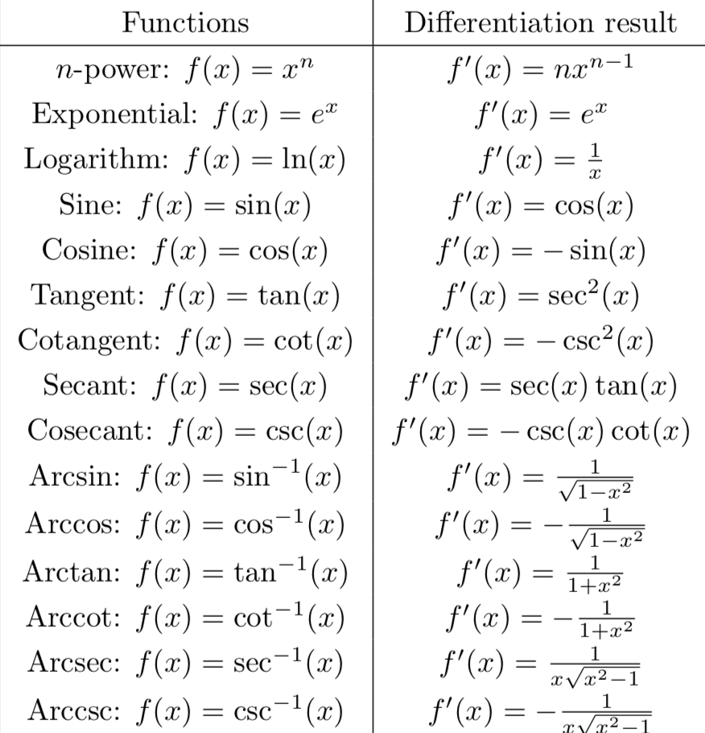

|
| Triangle inequality
|
| Trigo
| |
| |
|
| Bounded function
Periodic function
|
| Squeeze Theorem
| | Continuity
| | Composition
| | Intermediate Value Theorem
| | Min/max Theorem
| | Functions Injective
Inverse
| | Differentiability f is differentiable at x=a if this limit exists:

| | Minima/maxima
| | Mean Value Theorem
Rolle’s Theorem
| | Cauchy Mean Value Theorem
| | Concavity
At an inflection point,
or
does not exist. However,
is an inflection point. | | Integration
Integral MVT
| | Integration techniques

| | Fundamental theorem of calculus
| | Integration applications
| | Differential equations
| | Series
| | Convergence Tests Limit Test
Integral Test
P-series
LCT
Ratio Test
Root Test
Absolute convergence
Conditional convergence
Leibniz’ Test
| | Power Series
| | Taylor Series
| | Ordo
| | Taylor’s Theorem with Lagrange remainder
Taylor’s Theorem, asymptotic version
| |
with derivatives of all orders is analytic at
if its Taylor series at
converges to
on an open interval containing
.
|